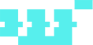

What is UniArts' ultimate goal?
Our ultimate goal is to provide the sort of NFT infrastructure, community voting, DAO curation, and art grants that allow for the true democratization of art.
Why was UniArts developed with Substrate?
UniArts' major functions are achieved by NPoS voting and on-chain governance which is aided by Substrate's development. It also pairs nicely with other facilities which were developed with Substrate, such as Crust, which handles decentralized content storage, a must-have for NFT connoisseurs.
How can artists use UniArts?
Its simple, first upload your existing artworks and mint them into NFTs. Next, bind them with curators (validator) nodes. After these two steps, people will be able to vote for the NFTs. When your NFTs get enough votes, UARTS will be minted into your NFTs, adding additional value.
How will UniArts help creators?
Yes, that's our mission. We hate the artwork market being monopolized by few, we are so sorry to see talented artists being rejected by galleries and their works underestimated. In UniArts, artists don’t have to sell their works, being loved by people and being voted in will receive reward as well as a chance to receive art grants and listed in offline curation.
How is UniArts different from other NFT platforms?
UniArts' focus and goals vary from the majority of NFT platforms. We are all about voting, selecting, and incubating artists like hidden gems and letting more appreciators discover and trade their amazing artwork. Estabilished artists will also find great value in UniArts, though they are not the main focus, which is another unique aspect of our model.
What is NPoS?
NPoS stands for Nominated Proof-of-Stake, which has been adopted from both Polkadot and Substrate. In the simplest of terms, it's people staking their tokens to vote for network nodes in order to receive block rewards. The selected nodes are responsible for ensuring the stability of the network, and receive rewards for doing so, along with the token holders that voted for them.
What is DAO curation and how does it relate to UniArts?
DAO curation is one way of understanding UniArts' NPOS. Curator running nodes for the network, invite artist to bind the NFTs they created with nodes in order to be voted, the artworks will be exhibited in the voting gallery, curator also need to alloctated block reward once selected as validator. Both exhibition and appreciation NFT can be rewarded, the whole process is decentralized.
Will UniArts partner with other leaders in the ecosystem?
Yes. We already partner with Crust and Darwinia and are in the process of connecting with Artsy and Processing. These are market leaders in online galleries and visual art languages respectively.
Does UniArts have the intention of diversifying in the future?
We actually already have. While artist incubation is and always be our primary focus, we will also be providing business solutions for IP to setup an NFT marketplace which support flat-money purchase. UniArts is also expanding into a multi ecosystem, like Polygon and and Difinty.
What disruptive innovation is UniArts bringing?
One of the innovations we are most proud of is the implementation of Nominated Proof of Stake (NPoS) voting to "crowd select" some of the most desirable artworks and mint block rewards into NFTs. This will have a positive effect on liquidity and quality incentives.
Are community members allowed to vote for change?
Yes, we value community voting, and it has been implemented into our design. There will be numerous aspects with which users can vote. Stay tuned for these details as they unfold.
How do appreciators factor into UniArts?
Easy, just stake your Uarts token and to vote for your preferred artworks, and you will earn more Uarts if the curator selected as validator.
Can NFTs minted in UniArts be exported to other NFT marketplaces?
Yes they can, but by doing so, the unique and valuable features that UniArts offers will be lost.
What is the job of a Creator in UniArt
Create artworks and mint NFT with their creations, bind the NFTs with curator nodes to be voted, block reward will be mint into NFTs once curator selected as validator.
What does the Curator do?
Running nodes for the network, invite artist to bind the NFTs they created with nodes in order to be voted, alloctated block reward once selected as validator.
How are validators chosen?
People staking Uarts to vote NFTs bind with Curator (validator canditite), each curator buy bind upto 3 NFTs (we suggest they created by the same artist). Every 24 hours, the top 21 curators by number of votes received for their bind NFTs are selected as validators for next 24 hours.
What does BTFLX stand for and how does it relate to UniArts?
BTFLX stand for Bitflix, more information to be find in https://btflx.com/ it sells movie NFTs, and the marketplace is being developed by UniArts on Polygon.
What is Onigiri Mikoshi?
A mobile app that supports NFT trading with flat money, which is currently in official business operation. UniArts only provides tech support for this APP.